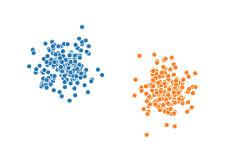
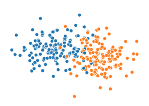
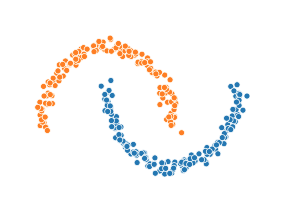
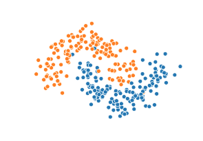
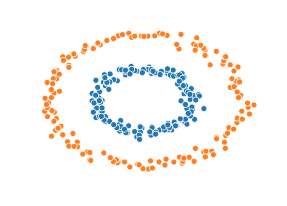
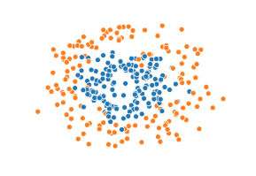
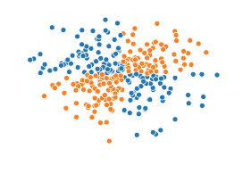
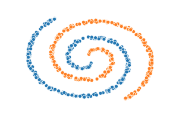
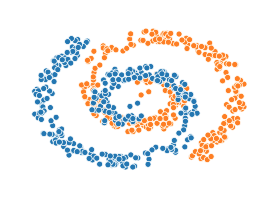

Points per Cluster :
5
Delay (ms) :
40
menu
K-NN
Naive Bayes
Linear Regression
Logistic Regression
Linear SVM
Decision Trees
Random Forests
K -means clustering
Dropdown 1
Link1
link2
link3
Normal link 1
Normal link 2
Choose
or
Draw









Write features in ' , ' saperated values : (Use ' . ' for element wise operations)
X_1
X_2
(X_1)^2
(X_2)^2
(X_1)*(X_2)
sin(X_1)
sin(X_2)
Learning Rate : (1e-3 <= alpha <= 10)
GD
Batch SGD
Batch Size :
10
Regularization :
None
L1
L2
Elastic
Lambda
Update
shuffle
replay
play_arrow
skip_next
Epoch :
000,000
Log Loss :
Train Loss :
---
Test Loss :
---
Accuracy :
Train Acc :
---
Test Acc :
---
Discretize output
Learning Rate
:
---
Batch SGD
:
---
Batch Size
:
---
Regularization
:
---
Reg. Param
:
---